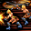
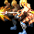

2020.6～ ランサー スキル一覧
2020/02/19 状態異常に伴うスキル改変後のデータ。
| 突き | ||||||||||||||
|---|---|---|---|---|---|---|---|---|---|---|---|---|---|---|
| スキル難易度 | 1 | |||||||||||||
| 必要スキル |
なし
|
|||||||||||||
| スキル説明 |
槍で突いて攻撃する。 |
|||||||||||||
| レベル | 1 | 2 | 3 | 4 | 5 | 6 | 7 | 8 | 9 | 10 | 20 | 30 | 40 | 50 |
| 消費CP | 0 | 0 | 0 | 0 | 0 | 0 | 0 | 0 | 0 | 0 | 0 | 0 | 0 | 0 |
| 獲得CP | 2.4 | 2.8 | 3.2 | 3.6 | 4 | 4.4 | 4.8 | 5.2 | 5.6 | 6 | 10 | 14 | 18 | 22 |
| 物理ダメージ | 2% | 4% | 6% | 8% | 10% | 12% | 14% | 16% | 18% | 20% | 40% | 60% | 80% | 100% |
| デザートブラスト | ||||||||||||||
|---|---|---|---|---|---|---|---|---|---|---|---|---|---|---|
| スキル難易度 | 1 | |||||||||||||
| 必要スキル | 突き[3] | |||||||||||||
| スキル説明 | 槍を回して敵を殴打する。周囲の敵を退け、若干のダメージを与える。 | |||||||||||||
| レベル | 1 | 2 | 3 | 4 | 5 | 6 | 7 | 8 | 9 | 10 | 20 | 30 | 40 | 50 |
| 消費CP | 5.2 | 5.4 | 5.6 | 5.8 | 6 | 6.2 | 6.4 | 6.6 | 6.8 | 7 | 9 | 11 | 13 | 15 |
| 獲得CP | 0.1 | 0.2 | 0.3 | 0.4 | 0.5 | 0.6 | 0.7 | 0.8 | 0.9 | 1 | 2 | 3 | 4 | 5 |
| 物理攻撃力 | 0.2 | 0.4 | 0.6 | 0.8 | 1 | 1.2 | 1.4 | 1.6 | 1.8 | 2 | 4 | 6 | 8 | 10 |
| 物理ダメージ | -50% | |||||||||||||
| 敵ノックバック距離 | 0.75m | |||||||||||||
| 効果範囲距離 | 武器射程距離 × 0.65 | |||||||||||||
| ラピッドスティンガー | ||||||||||||||
|---|---|---|---|---|---|---|---|---|---|---|---|---|---|---|
| スキル難易度 | 2 | |||||||||||||
| 必要スキル | 突き[6] | |||||||||||||
| スキル説明 | 素早い速度で敵を突き貫く。 正確に命中させることで、敵に回避と反撃の隙を与えない。 | |||||||||||||
| レベル | 1 | 2 | 3 | 4 | 5 | 6 | 7 | 8 | 9 | 10 | 20 | 30 | 40 | 50 |
| 消費CP | 5.2 | 5.4 | 5.6 | 5.8 | 6 | 6.2 | 6.4 | 6.6 | 6.8 | 7 | 9 | 11 | 13 | 15 |
| 獲得CP | 6 | 7 | 8 | 9 | 10 | 11 | 12 | 13 | 14 | 15 | 25 | 35 | 45 | 55 |
| 物理ダメージ | 9% | 13% | 17% | 21% | 25% | 29% | 33% | 37% | 41% | 45% | 85% | 125% | 165% | 205% |
| 攻撃速度 | 10.80% | 11.60% | 12.40% | 13.20% | 14% | 14.80% | 15.60% | 16.40% | 17.20% | 18% | 26% | 34% | 42% | 50% |
| 命中率補正値 | 5.3% | 5.6% | 5.9% | 6.2% | 6.5% | 6.8% | 7.1% | 7.4% | 7.7% | 8.0% | 11% | 14% | 17% | 20% |
| 槍投げ | ||||||||||||||
|---|---|---|---|---|---|---|---|---|---|---|---|---|---|---|
| スキル難易度 | 1 | |||||||||||||
| 必要スキル |
突き[3] デザートブラスト[3] アーチャー：射掛ける[3]
|
|||||||||||||
| スキル説明 | 持っている槍を敵に投擲して、ダメージを与える。 | |||||||||||||
| レベル | 1 | 2 | 3 | 4 | 5 | 6 | 7 | 8 | 9 | 10 | 20 | 30 | 40 | 50 |
| 消費CP | 0.1 | 0.2 | 0.3 | 0.4 | 0.5 | 0.6 | 0.7 | 0.8 | 0.9 | 1 | 2 | 3 | 4 | 5 |
| 獲得CP | 0.9 | 1.8 | 2.7 | 3.6 | 4.5 | 5.4 | 6.3 | 7.2 | 8.1 | 9 | 18 | 27 | 36 | 45 |
| 物理ダメージ | 58% | 66% | 74% | 82% | 90% | 98% | 106% | 114% | 122% | 130% | 210% | 290% | 370% | 450% |
| 命中率補正値 | 無し | |||||||||||||
| 射程距離 | 4.5m | |||||||||||||
| 敵ブロック率低下 | 無し | |||||||||||||
| 備考 | ジョブチェンジ効果無し | |||||||||||||
| インパクトスピア | ||||||||||||||
|---|---|---|---|---|---|---|---|---|---|---|---|---|---|---|
| スキル難易度 | 2 | |||||||||||||
| 必要スキル |
槍投げ[6] アーチャー：射掛ける[3]
|
|||||||||||||
| スキル説明 | 虚像で作った槍を投擲し、敵を気絶させ、ダメージを与える。 | |||||||||||||
| レベル | 1 | 2 | 3 | 4 | 5 | 6 | 7 | 8 | 9 | 10 | 20 | 30 | 40 | 50 |
| 消費CP | 10.3 | 10.6 | 10.9 | 11.2 | 11.5 | 11.8 | 12.1 | 12.4 | 12.7 | 13 | 16 | 19 | 22 | 25 |
| 獲得CP | 2 | 4 | 6 | 8 | 10 | 12 | 14 | 16 | 18 | 20 | 40 | 60 | 80 | 100 |
| 物理ダメージ | 108% | 116% | 124% | 132% | 140% | 148% | 156% | 164% | 172% | 180% | 260% | 340% | 420% | 500% |
| 光属性攻撃力 | 無し | |||||||||||||
| 命中/回避率低下(秒) | 無し | |||||||||||||
| 射程距離 | 4.5m | |||||||||||||
| 硬直時間 | 5秒 | |||||||||||||
| クールタイム | 15秒 | |||||||||||||
| 備考 | ジョブチェンジ効果無し 硬直 - 異常系:行動不可 |
|||||||||||||
| ジャベリンテンペスト | ||||||||||||||
|---|---|---|---|---|---|---|---|---|---|---|---|---|---|---|
| スキル難易度 | 3 | |||||||||||||
| 必要スキル |
|
|||||||||||||
| スキル説明 | 槍に魔力を込めて放ち、嵐で遠距離の敵を攻撃する。 | |||||||||||||
| レベル | 1 | 2 | 3 | 4 | 5 | 6 | 7 | 8 | 9 | 10 | 20 | 30 | 40 | 50 |
| 消費CP | 53 | 56 | 59 | 62 | 65 | 68 | 71 | 74 | 77 | 80 | 110 | 140 | 170 | 200 |
| 獲得CP | 1 | 2 | 3 | 4 | 5 | 6 | 7 | 8 | 9 | 10 | 20 | 30 | 40 | 50 |
| 物理ダメ | 4% | 8% | 12% | 16% | 20% | 24% | 28% | 32% | 36% | 40% | 80% | 120% | 160% | 200% |
| 射程距離 | 1m～10m | |||||||||||||
| 攻撃回数 | 3回 | |||||||||||||
| 効果範囲距離(m) | 1m | |||||||||||||
| ブレイキング ポイント | ||||||||||||||
|---|---|---|---|---|---|---|---|---|---|---|---|---|---|---|
| スキル難易度 | 1 | |||||||||||||
| 必要スキル |
|
|||||||||||||
| スキル説明 | 槍術で敵の攻撃を防ぐ。 | |||||||||||||
| レベル | 1 | 2 | 3 | 4 | 5 | 6 | 7 | 8 | 9 | 10 | 20 | 30 | 40 | 50 |
| 消費CP | 11 | 12 | 13 | 14 | 15 | 16 | 17 | 18 | 19 | 20 | 30 | 40 | 50 | 60 |
| 獲得CP | 0.3 | 0.6 | 0.9 | 1.2 | 1.5 | 1.8 | 2.1 | 2.4 | 2.7 | 3 | 6 | 9 | 12 | 15 |
| 集中力 | 5.20% | 5.40% | 5.60% | 5.80% | 6% | 6.20% | 6.40% | 6.60% | 6.80% | 7% | 9% | 11% | 13% | 15% |
| 射程距離(M) | 2.6 | 2.7 | 2.8 | 2.9 | 3 | 3.1 | 3.2 | 3.3 | 3.4 | 3.5 | 4.5 | 5.5 | 6.5 | 7.5 |
| 大地抵抗 | 25% | |||||||||||||
| 更新間隔 | 5秒(持続6秒) | |||||||||||||
| レベル | 1 | 2 | 3 | 4 | 5 | 6 | 7 | 8 | 9 | 10 | 20 | 30 | 40 | 50 |
| 消費CP | 0.3 | 0.6 | 0.9 | 1.2 | 1.5 | 1.8 | 2.1 | 2.4 | 2.7 | 3 | 6 | 9 | 12 | 15 |
| 獲得CP | 0.4 | 0.8 | 1.2 | 1.6 | 2 | 2.4 | 2.8 | 3.2 | 3.6 | 4 | 8 | 12 | 16 | 20 |
| 発動確率(最大50％) | 15.60% | 16.20% | 16.80% | 17.40% | 18% | 18.60% | 19.20% | 19.80% | 20.40% | 21% | 27% | 33% | 39% | 45% |
| サイドステップ | ||||||||||||||
|---|---|---|---|---|---|---|---|---|---|---|---|---|---|---|
| スキル難易度 | 2 | |||||||||||||
| 必要スキル |
ブレイキングポイント[6]
|
|||||||||||||
| スキル説明 | 軽快な動きで敵の攻撃を回避する。 | |||||||||||||
| レベル | 1 | 2 | 3 | 4 | 5 | 6 | 7 | 8 | 9 | 10 | 20 | 30 | 40 | 50 |
| 消費CP | 5.5 | 6 | 6.5 | 7 | 7.5 | 8 | 8.5 | 9 | 9.5 | 10 | 15 | 20 | 25 | 30 |
| 獲得CP | 0.6 | 1.2 | 1.8 | 2.4 | 3 | 3.6 | 4.2 | 4.8 | 5.4 | 6 | 12 | 18 | 24 | 30 |
| 発動確率(最大55％) | 20.50% | 21% | 21.50% | 22% | 22.50% | 23% | 23.50% | 24% | 24.50% | 25% | 30% | 35% | 40% | 45% |
| 回避距離 | 0px | |||||||||||||
 |
スピンアライジング | |||||||||||||
|---|---|---|---|---|---|---|---|---|---|---|---|---|---|---|
| スキル難易度 | 2 | |||||||||||||
| 必要スキル |
ブレイキングポイント[6] デザートブラスト[6]
|
|||||||||||||
| スキル説明 | 攻撃を受けた時に、槍を旋回させ、敵を一定距離に離しておく。 | |||||||||||||
| レベル | 1 | 2 | 3 | 4 | 5 | 6 | 7 | 8 | 9 | 10 | 20 | 30 | 40 | 50 |
| 消費CP | 1 | 2 | 3 | 4 | 5 | 6 | 7 | 8 | 9 | 10 | 20 | 30 | 40 | 50 |
| 獲得CP | 0 | |||||||||||||
| 物理ダメ | 4% | 8% | 12% | 16% | 20% | 24% | 28% | 32% | 36% | 40% | 80% | 120% | 160% | 200% |
| 発動確率(Max30%) | 10.2% | 10.4% | 10.6% | 10.8% | 11.0% | 11.2% | 11.4% | 11.6% | 11.8% | 12% | 14% | 16% | 18% | 20% |
| 麻痺確率 | 無し | |||||||||||||
| 敵ノックバック距離 | 無し | |||||||||||||
| 攻撃範囲 | 2m | |||||||||||||
| アーマーディスアセンブラ | ||||||||||||||
|---|---|---|---|---|---|---|---|---|---|---|---|---|---|---|
| スキル難易度 | 3 | |||||||||||||
| 必要スキル |
ブレイキングポイント[12] ラピッドスティンガー[6]
|
|||||||||||||
| スキル説明 | 敵の攻撃を受けた瞬間に素早く敵の鎧を完全解体して防御力を落とす。 | |||||||||||||
| レベル | 1 | 2 | 3 | 4 | 5 | 6 | 7 | 8 | 9 | 10 | 20 | 30 | 40 | 50 |
| 消費CP | 16 | 17 | 18 | 19 | 20 | 21 | 22 | 23 | 24 | 25 | 35 | 45 | 55 | 65 |
| 獲得CP | 0 | 0 | 0 | 0 | 0 | 0 | 0 | 0 | 0 | 0 | 0 | 0 | 0 | 0 |
| 発動確率(Max50%) | 5.5% | 6.0% | 6.5% | 7.0% | 7.5% | 8.0% | 8.5% | 9.0% | 9.5% | 10% | 15% | 20% | 25% | 30% |
| 防御力低下率 | 75% | |||||||||||||
| 防御力の低下時間(秒) | 2.3 | 2.6 | 2.9 | 3.2 | 3.5 | 3.8 | 4.1 | 4.4 | 4.7 | 5 | 8 | 11 | 14 | 17 |
| ライトニングエンチャント | ||||||||||||||
|---|---|---|---|---|---|---|---|---|---|---|---|---|---|---|
| スキル難易度 | 4 | |||||||||||||
| 必要スキル |
サイドステップ[12]
|
|||||||||||||
| スキル説明 | ランサーが自身の槍に魔法をかけ、敵に与えたダメージに比例して追加で光属性ダメージを与える。 | |||||||||||||
| レベル | 1 | 2 | 3 | 4 | 5 | 6 | 7 | 8 | 9 | 10 | 20 | 30 | 40 | 50 |
| 必要CP | 0 | |||||||||||||
| 消費CP | 1.5 | 2 | 2.5 | 3 | 3.5 | 4 | 4.5 | 5 | 5.5 | 6 | 11 | 16 | 21 | 26 |
| 獲得CP | 0 | 0 | 0 | 0 | 0 | 0 | 0 | 0 | 0 | 0 | 0 | 0 | 0 | 0 |
| 発動確率 | 100%光ダメージ（最大で与ダメージの10%） | |||||||||||||
| 追加光ダメ(％) | 1.09 | 1.18 | 1.27 | 1.36 | 1.45 | 1.54 | 1.63 | 1.72 | 1.81 | 1.9 | 2.8 | 3.7 | 4.6 | 5.5 |
| オーラ攻撃頻度 | 1秒 | |||||||||||||
| 備考 | ※消費CPは1秒当たりの消費CP 100%の確率で物理ダメージの[n]％の光属性追加ダメージ |
|||||||||||||
| 旋風突き | ||||||||||||||
|---|---|---|---|---|---|---|---|---|---|---|---|---|---|---|
| スキル難易度 | 2 | |||||||||||||
| 必要スキル |
槍投げ[3]
|
|||||||||||||
| スキル説明 | 槍を回し周囲をなぎ払った後、敵を攻撃する。 近くにいる敵を吹き飛ばし、対象には追加で突き攻撃を加える。 | |||||||||||||
| レベル | 1 | 2 | 3 | 4 | 5 | 6 | 7 | 8 | 9 | 10 | 20 | 30 | 40 | 50 |
| 消費CP | 5.1 | 5.2 | 5.3 | 5.4 | 5.5 | 5.6 | 5.7 | 5.8 | 5.9 | 6 | 7 | 8 | 9 | 10 |
| 獲得CP | 0.5 | 1 | 1.5 | 2 | 2.5 | 3 | 3.5 | 4 | 4.5 | 5 | 10 | 15 | 20 | 25 |
| 物理ダメ1発目 | 1% | 2% | 3% | 4% | 5% | 6% | 7% | 8% | 9% | 10% | 20% | 30% | 40% | 50% |
| 物理ダメ2発目 | 50.20% | 50.40% | 50.60% | 50.80% | 51% | 51.20% | 51.40% | 51.60% | 51.80% | 52% | 54% | 56% | 58% | 60% |
| 敵ノックバック距離 | 0.75m | |||||||||||||
|  | サプライジングレイド | |||||||||||||
|---|---|---|---|---|---|---|---|---|---|---|---|---|---|---|
| スキル難易度 | 2 | |||||||||||||
| 必要スキル |
旋風突き[6] サイドステップ[3]
|
|||||||||||||
| スキル説明 | 槍を旋回し、その勢いで瞬間的に敵との距離を詰めてから、突きで攻撃する。 | |||||||||||||
| レベル | 1 | 2 | 3 | 4 | 5 | 6 | 7 | 8 | 9 | 10 | 20 | 30 | 40 | 50 |
| 消費CP | 17.2 | 17.4 | 17.6 | 17.8 | 18 | 18.2 | 18.4 | 18.6 | 18.8 | 19 | 21 | 23 | 25 | 27 |
| 獲得CP | 1 | 2 | 3 | 4 | 5 | 6 | 7 | 8 | 9 | 10 | 20 | 30 | 40 | 50 |
| 物理ダメ1発目 | 12% | 14% | 16% | 18% | 20% | 22% | 24% | 26% | 28% | 30% | 50% | 70% | 90% | 110% |
| 物理ダメ2発目 | 50.30% | 50.60% | 50.90% | 51.20% | 51.50% | 51.80% | 52.10% | 52.40% | 52.70% | 53% | 56% | 59% | 62% | 65% |
| 備考 | PVP時クールタイム5秒 | |||||||||||||
| ワールランニング | ||||||||||||||
|---|---|---|---|---|---|---|---|---|---|---|---|---|---|---|
| スキル難易度 | 2 | |||||||||||||
| 必要スキル |
デザートブラスト[6] サイドステップ[3]
|
|||||||||||||
| スキル説明 | 槍を回しながら前方に突進する。前方にいる敵は横に押し出される。 | |||||||||||||
| レベル | 1 | 2 | 3 | 4 | 5 | 6 | 7 | 8 | 9 | 10 | 20 | 30 | 40 | 50 |
| 消費CP | 15.8 | 16.6 | 17.4 | 18.2 | 19 | 19.8 | 20.6 | 21.4 | 22.2 | 23 | 31 | 39 | 47 | 55 |
| 獲得CP | 1 | 2 | 3 | 4 | 5 | 6 | 7 | 8 | 9 | 10 | 20 | 30 | 40 | 50 |
| 移動速度増加(%) | 5 | 6 | 7 | 8 | 9 | 10 | 11 | 12 | 13 | 14 | 24 | 34 | 44 | 54 |
| 増加時間(秒) | 10 | 11 | 11 | 12 | 12 | 13 | 13 | 14 | 14 | 15 | 20 | 25 | 30 | 40 |
| 敵麻痺持続時間(秒) | 無し | |||||||||||||
| 敵ノックバック距離 | 0.75m | |||||||||||||
| 最大射程距離(m) | 20 | |||||||||||||
| 効果範囲距離 | 武器射程距離 × 0.45 | |||||||||||||
| 備考 | PVP時クールタイム5秒 | |||||||||||||
| スチールレイン | ||||||||||||||
|---|---|---|---|---|---|---|---|---|---|---|---|---|---|---|
| スキル難易度 | 3 | |||||||||||||
| 必要スキル |
ワールランニング[6]
|
|||||||||||||
| スキル説明 | 空から数多くの槍を召喚し、範囲内にいる全ての敵を攻撃する。 | |||||||||||||
| レベル | 1 | 2 | 3 | 4 | 5 | 6 | 7 | 8 | 9 | 10 | 20 | 30 | 40 | 50 |
| 消費CP | 24 | 28 | 32 | 36 | 40 | 44 | 48 | 52 | 56 | 60 | 100 | 140 | 180 | 220 |
| 獲得CP | 1 | 2 | 3 | 4 | 5 | 6 | 7 | 8 | 9 | 10 | 20 | 30 | 40 | 50 |
| 物理ダメ | 9.5% | 11.5% | 13.5% | 15.5% | 17.5% | 19.5% | 21.5% | 23.5% | 25.5% | 27.5% | 47.5% | 67.5% | 87.5% | 107.5% |
| 攻撃範囲(m) | 1.53 | 1.56 | 1.59 | 1.62 | 1.65 | 1.68 | 1.71 | 1.74 | 1.77 | 1.80 | 2.1 | 2.4 | 2.7 | 3.0 |
| 効果範囲距離 | 無し | |||||||||||||
| 敵ノックバック距離 | 無し | |||||||||||||
| 攻撃回数 | 5回 | |||||||||||||
| 備考 | 攻撃範囲は最大3m | |||||||||||||
| 備考 | PVP時クールタイム5秒 | |||||||||||||
| ロージングインパクト | ||||||||||||||
|---|---|---|---|---|---|---|---|---|---|---|---|---|---|---|
| スキル難易度 | 4 | |||||||||||||
| 必要スキル |
ワールランニング[12] スチールレイン[6] インパクトスピア[12]
|
|||||||||||||
| スキル説明 | 魔法で巨大化させた槍を前方に投擲し、ダメージを与える。槍が通った線上にいる全ての敵にダメージを与える。 | |||||||||||||
| レベル | 1 | 2 | 3 | 4 | 5 | 6 | 7 | 8 | 9 | 10 | 20 | 30 | 40 | 50 |
| 消費CP | 57 | 59 | 61 | 63 | 65 | 67 | 69 | 71 | 73 | 75 | 95 | 115 | 135 | 155 |
| 獲得CP | 1 | 2 | 3 | 4 | 5 | 6 | 7 | 8 | 9 | 10 | 20 | 30 | 40 | 50 |
| 物理ダメ | 14.5% | 21.5% | 28.5% | 35.5% | 42.5% | 49.5% | 56.5% | 63.5% | 70.5% | 77.5% | 147.5% | 217.5% | 287.5% | 357.5% |
| 攻撃回数(最大6回) | 1 | 1 | 1 | 1 | 2 | 2 | 2 | 2 | 2 | 2 | 3 | 4 | 5 | 6 |
| 敵ノックバック距離 | 無し | |||||||||||||
| 射程距離 | 1～10m | |||||||||||||
| 攻撃範囲 | 2m | |||||||||||||
| グラウンドシェイカー | ||||||||||||||
|---|---|---|---|---|---|---|---|---|---|---|---|---|---|---|
| スキル難易度 | 2 | |||||||||||||
| 必要スキル |
デザートブラスト [6] 確信 [6]
|
|||||||||||||
| スキル説明 | 魔力を込めた槍を地面に突き立てて小さい地震を引き起こす。 敵は身動きが取れず、バランスを失って倒れる。 | |||||||||||||
| レベル | 1 | 2 | 3 | 4 | 5 | 6 | 7 | 8 | 9 | 10 | 20 | 30 | 40 | 50 |
| 消費CP | 10.5 | 11 | 11.5 | 12 | 12.5 | 13 | 13.5 | 14 | 14.5 | 15 | 20 | 25 | 30 | 35 |
| 獲得CP | 0 | 0 | 0 | 0 | 0 | 0 | 0 | 0 | 0 | 0 | 0 | 0 | 0 | 0 |
| 地属性の攻撃力 | 12〜12 | 13〜15 | 15〜17 | 16〜20 | 18〜22 | 20〜24 | 21〜27 | 23〜29 | 24〜32 | 26〜34 | 42〜58 | 58〜82 | 74〜106 | 90〜130 |
| 爆発範囲 | 3m | |||||||||||||
| 麻痺確率 | 100% | |||||||||||||
| 麻痺持続時間(秒) | 3秒 | |||||||||||||
| クールタイム(秒) | 20秒 | |||||||||||||
| 備考 | 段階別ダメージ適用[50%～130%](20%刻み) | |||||||||||||
| ラジアルアーク | ||||||||||||||
|---|---|---|---|---|---|---|---|---|---|---|---|---|---|---|
| スキル難易度 | 3 | |||||||||||||
| 必要スキル |
グラウンドシェイカー[6] ジャベリンテンペスト[3] 確信[12]
|
|||||||||||||
| スキル説明 | 魔力を込めた槍を地面に突き刺して槍を媒体に稲妻を召喚し、 周囲に放射上の衝撃波を飛ばす。 | |||||||||||||
| レベル | 1 | 2 | 3 | 4 | 5 | 6 | 7 | 8 | 9 | 10 | 20 | 30 | 40 | 50 |
| 消費CP | 26 | 27 | 28 | 29 | 30 | 31 | 32 | 33 | 34 | 35 | 45 | 55 | 65 | 75 |
| 獲得CP | 0 | 0 | 0 | 0 | 0 | 0 | 0 | 0 | 0 | 0 | 0 | 0 | 0 | 0 |
| 風属性攻撃力 | 13〜17 | 16〜24 | 19〜31 | 22〜38 | 25〜45 | 28〜52 | 31〜59 | 34〜66 | 37〜73 | 40〜80 | 70〜150 | 100〜220 | 130〜290 | 160〜360 |
| 光属性攻撃力 | 1〜5 | 1〜9 | 1〜13 | 1〜17 | 1〜21 | 1〜25 | 1〜29 | 1〜33 | 1〜37 | 1〜41 | 1〜81 | 1〜121 | 1〜161 | 1〜201 |
| 敵命中/回避低下(秒) | 無し | |||||||||||||
| 攻撃回数 | 2 | 2 | 2 | 2 | 3 | 3 | 3 | 3 | 3 | 4 | 6 | 8 | 10 | 12 |
| 射程距離 | 7m | |||||||||||||
| 攻撃範囲(m) | 1.25 | 1.26 | 1.26 | 1.27 | 1.27 | 1.28 | 1.28 | 1.29 | 1.29 | 1.30 | 1.35 | 1.40 | 1.45 | 1.50 |
| 備考 | 段階別ダメージ無し | |||||||||||||
| 備考 | 範囲は最大1.5m(SLv50)、攻撃回数は最大12回（SLv50） | |||||||||||||
| ファイアー・アンド・アイス | ||||||||||||||
|---|---|---|---|---|---|---|---|---|---|---|---|---|---|---|
| スキル難易度 | 4 | |||||||||||||
| 必要スキル |
デザートブラスト[18] 信念[12]
|
|||||||||||||
| スキル説明 | 槍の一端には炎, 反対側には氷を召喚し、槍を旋回させて炎と氷が渦を描くように攻撃する。敵にダメージを与え、場合によっては凍りつかせる。 | |||||||||||||
| レベル | 1 | 2 | 3 | 4 | 5 | 6 | 7 | 8 | 9 | 10 | 20 | 30 | 40 | 50 |
| 消費CP | 51.5 | 53 | 54.5 | 56 | 57.5 | 59 | 60.5 | 62 | 63.5 | 65 | 80 | 95 | 110 | 125 |
| 獲得CP | 0 | 0 | 0 | 0 | 0 | 0 | 0 | 0 | 0 | 0 | 0 | 0 | 0 | 0 |
| 火属性攻撃力 | 17〜65 | 22〜70 | 27〜75 | 32〜80 | 37〜85 | 42〜90 | 47〜95 | 52〜100 | 57〜105 | 62〜110 | 112〜160 | 162〜210 | 212〜260 | 262〜310 |
| 水属性攻撃力 | 7〜15 | 10〜18 | 13〜21 | 16〜24 | 19〜27 | 22〜30 | 25〜33 | 28〜36 | 31〜39 | 34〜42 | 64〜72 | 94〜102 | 124〜132 | 154〜162 |
| 爆発範囲半径(m) | 3.04 | 3.08 | 3.12 | 3.16 | 3.2 | 3.24 | 3.28 | 3.32 | 3.36 | 3.4 | 3.8 | 4.2 | 4.6 | 5 |
| コールド確率 | 10% | |||||||||||||
| コールド持続時間 | 2秒 | |||||||||||||
| 攻撃回数 | 2回 | |||||||||||||
| 備考 | 段階別ダメージ無し | |||||||||||||
| 備考 | 攻撃範囲は最大6m | |||||||||||||
| ガーディアンポスト | ||||||||||||||
|---|---|---|---|---|---|---|---|---|---|---|---|---|---|---|
| スキル難易度 | 5 | |||||||||||||
| 必要スキル | ラジアルアーク[12] ジャベリンテンペスト[12] アーチャー：ピアシングアロー[18] 信念[18] | |||||||||||||
| スキル説明 | 魔力を込めた槍を地面に突き刺して、稲妻を召喚する。弓矢に武器を持ち直し、召喚された稲妻は指定した敵に向かって連続で放電攻撃を行う。 | |||||||||||||
| レベル | 1 | 2 | 3 | 4 | 5 | 6 | 7 | 8 | 9 | 10 | 20 | 30 | 40 | 50 |
| 消費CP | 102 | 104 | 106 | 108 | 110 | 112 | 114 | 116 | 118 | 120 | 140 | 160 | 180 | 200 |
| 獲得CP | 0 | 0 | 0 | 0 | 0 | 0 | 0 | 0 | 0 | 0 | 0 | 0 | 0 | 0 |
| 風属性攻撃力 | 20〜24 | 21〜29 | 21〜33 | 22〜38 | 22〜42 | 22〜46 | 23〜51 | 23〜55 | 24〜60 | 24〜64 | 28〜108 | 32〜152 | 36〜196 | 40〜240 |
| 光属性攻撃力 | 1〜9 | 1〜18 | 1〜26 | 1〜35 | 1〜43 | 1〜51 | 1〜60 | 1〜68 | 1〜77 | 1〜85 | 1〜169 | 1〜253 | 1〜337 | 1〜421 |
| 敵命中/回避低下(秒) | 1.2 | 1.4 | 1.6 | 1.8 | 2 | 2.2 | 2.4 | 2.6 | 2.8 | 3 | 5 | 7 | 9 | 11 |
| 爆発範囲半径(m) | 3.53 | 3.56 | 3.59 | 3.62 | 3.65 | 3.68 | 3.71 | 3.74 | 3.77 | 3.8 | 4.1 | 4.4 | 4.7 | 5 |
| 有効時間(秒) | 6.5 | 8 | 9.5 | 11 | 12.5 | 14 | 15.5 | 17 | 18.5 | 20 | 35 | 50 | 65 | 80 |
| 敵の攻撃限界回数(Max 45) | 3 | 4 | 4 | 5 | 6 | 7 | 8 | 8 | 9 | 10 | 18 | 26 | 34 | 42 |
| 1発当たり攻撃速度 | 1.0秒 | |||||||||||||
| 備考 | 段階別ダメージ適用[40%～130%](20%刻み) | |||||||||||||
| 備考 | エターナルプロジェクター、ボイドボウは本スキル使用中の間、使用不可。 | |||||||||||||
|  | エントラップメントピアシング | |||||||||||||
|---|---|---|---|---|---|---|---|---|---|---|---|---|---|---|
| スキル難易度 | 3 | |||||||||||||
| 必要スキル |
ラピッドスティンガー[6] インパクトスピア[6]
|
|||||||||||||
| スキル説明 | 多数の分身を生み出し、敵を囲んで集中攻撃を行う。 | |||||||||||||
| レベル | 1 | 2 | 3 | 4 | 5 | 6 | 7 | 8 | 9 | 10 | 20 | 30 | 40 | 50 |
| 消費CP | 32 | 34 | 36 | 38 | 40 | 42 | 44 | 46 | 48 | 50 | 70 | 90 | 110 | 130 |
| 獲得CP | 0.2 | 0.4 | 0.6 | 0.8 | 1 | 1.2 | 1.4 | 1.6 | 1.8 | 2 | 4 | 6 | 8 | 10 |
| 物理ダメージ | 8 | 16 | 24 | 32 | 40 | 48 | 56 | 64 | 72 | 80 | 160 | 240 | 320 | 400 |
| 命中率補正値 | -5% | |||||||||||||
| 分身数 | 2 | 2 | 2 | 2 | 3 | 3 | 3 | 3 | 3 | 3 | 4 | 5 | 6 | 7 |
| 備考 | SLv75で最大10回同時攻撃 | |||||||||||||
| オーサムフォートレス | ||||||||||||||
|---|---|---|---|---|---|---|---|---|---|---|---|---|---|---|
| スキル難易度 | 4 | |||||||||||||
| 必要スキル | エントラップメントピアシング[6] 信念[12] | |||||||||||||
| スキル説明 | 多数の分身を生み出し、近くの敵を同時に攻撃する。 | |||||||||||||
| レベル | 1 | 2 | 3 | 4 | 5 | 6 | 7 | 8 | 9 | 10 | 20 | 30 | 40 | 50 |
| 消費CP | 62 | 64 | 66 | 68 | 70 | 72 | 74 | 76 | 78 | 80 | 100 | 120 | 140 | 160 |
| 獲得CP | 1 | 2 | 3 | 4 | 5 | 6 | 7 | 8 | 9 | 10 | 20 | 30 | 40 | 50 |
| 物理ダメージ | 12% | 24% | 36% | 48% | 60% | 72% | 84% | 96% | 108% | 120% | 240% | 360% | 480% | 600% |
| 命中率補正値 | 0.10% | 0.20% | 0.30% | 0.40% | 0.50% | 0.60% | 0.70% | 0.80% | 0.90% | 1% | 2% | 3% | 4% | 5% |
| 分身数 | 3 | 3 | 3 | 3 | 3 | 3 | 3 | 3 | 3 | 4 | 5 | 6 | 7 | 8 |
| 攻撃回数 | 2 | 2 | 2 | 2 | 2 | 2 | 2 | 2 | 2 | 2 | 3 | 3 | 4 | 5 |
| 攻撃範囲(m) | 1.04 | 1.08 | 1.12 | 1.16 | 1.20 | 1.24 | 1.28 | 1.32 | 1.36 | 1.40 | 1.80 | 2.20 | 2.60 | 3.0 |
| 備考 | SLv50で最大8体に最大5回同時攻撃。 範囲は最大3m |
|||||||||||||
| ミラーメラーミスト | ||||||||||||||
|---|---|---|---|---|---|---|---|---|---|---|---|---|---|---|
| スキル難易度 | 5 | |||||||||||||
| 必要スキル | エントラップメントピアシング[12] オーサムフォートレス[6] 確信[24] | |||||||||||||
| スキル説明 | 自分の槍に霧の魔法をかけて指定した味方の周囲を旋回させ、敵の攻撃を防ぐ防御幕を生み出す。 自身は弓矢に持ち直す。この技術の使用中は槍を武器として使うことができない。 | |||||||||||||
| レベル | 1 | 2 | 3 | 4 | 5 | 6 | 7 | 8 | 9 | 10 | 20 | 30 | 40 | 50 |
| 消費CP | 125 | 130 | 135 | 140 | 145 | 150 | 155 | 160 | 165 | 170 | 220 | 270 | 320 | 370 |
| 獲得CP | 0 | 0 | 0 | 0 | 0 | 0 | 0 | 0 | 0 | 0 | 0 | 0 | 0 | 0 |
| ブロック確率 | 15.60% | 16.20% | 16.80% | 17.40% | 18% | 18.60% | 19.20% | 19.80% | 20.40% | 21% | 27% | 33% | 39% | 45% |
| 持続時間(秒) | 128 | 136 | 144 | 152 | 160 | 168 | 176 | 184 | 192 | 200 | 280 | 360 | 440 | 520 |
| 備考 | SLv75で最大ブロック率60% | |||||||||||||
| 確信 | ||||||||||||||
|---|---|---|---|---|---|---|---|---|---|---|---|---|---|---|
| スキル難易度 | 1 | |||||||||||||
| 必要スキル | 突き [1] | |||||||||||||
| スキル説明 | 固く決心をして、槍の魔法を使うために精神力を高める。 | |||||||||||||
| レベル | 1 | 2 | 3 | 4 | 5 | 6 | 7 | 8 | 9 | 10 | 20 | 30 | 40 | 50 |
| 消費CP | 0.5 | 1 | 1.5 | 2 | 2.5 | 3 | 3.5 | 4 | 4.5 | 5 | 10 | 15 | 20 | 25 |
| 獲得CP | 11 | 12 | 13 | 14 | 15 | 16 | 17 | 18 | 19 | 20 | 30 | 40 | 50 | 60 |
| キャスティング速度(秒) | 1.24 | 1.24 | 1.23 | 1.23 | 1.22 | 1.21 | 1.21 | 1.2 | 1.19 | 1.19 | 1.13 | 1.06 | 1 | 0.94 |
| 信念 | ||||||||||||||
|---|---|---|---|---|---|---|---|---|---|---|---|---|---|---|
| スキル難易度 | 2 | |||||||||||||
| 必要スキル |
確信 [6]
|
|||||||||||||
| スキル説明 | 心の中で自分に対する信念を揺ぎ無きものにし、 槍の魔法を使うための精神力を高める。瞬間的に攻撃力が上昇する。 | |||||||||||||
| レベル | 1 | 2 | 3 | 4 | 5 | 6 | 7 | 8 | 9 | 10 | 20 | 30 | 40 | 50 |
| 消費CP | 15.5 | 16 | 16.5 | 17 | 17.5 | 18 | 18.5 | 19 | 19.5 | 20 | 25 | 30 | 35 | 40 |
| 獲得CP | 26.5 | 28 | 29.5 | 31 | 32.5 | 34 | 35.5 | 37 | 38.5 | 40 | 55 | 70 | 85 | 100 |
| キャスティング速度(秒) | 1.87 | 1.86 | 1.85 | 1.84 | 1.83 | 1.82 | 1.81 | 1.8 | 1.79 | 1.78 | 1.69 | 1.59 | 1.5 | 1.41 |
| 物理ダメ増加量 | 5.5% | 6.0% | 6.5% | 7.0% | 7.5% | 8.0% | 8.5% | 9.0% | 9.5% | 10% | 15% | 20% | 25% | 30% |
| 魔法ダメ上昇量 (最大50%) |
5.5% | 6.0% | 6.5% | 7.0% | 7.5% | 8.0% | 8.5% | 9.0% | 9.5% | 10% | 15% | 20% | 25% | 30% |
| 持続時間(秒) | 60秒 | |||||||||||||
[参考]公式サイト